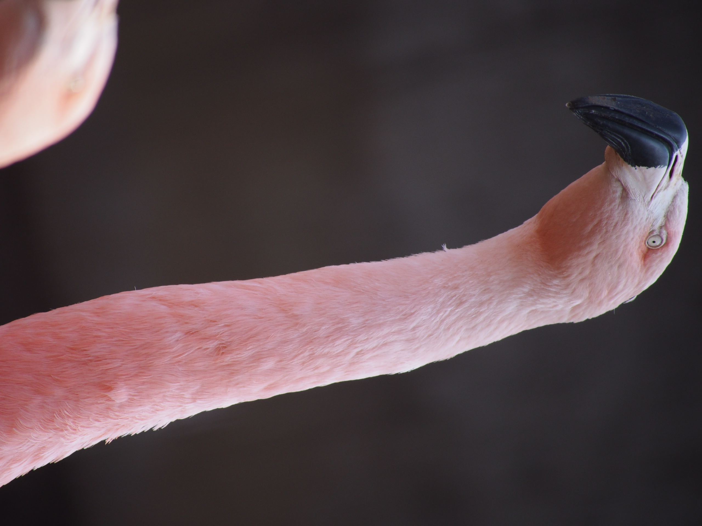
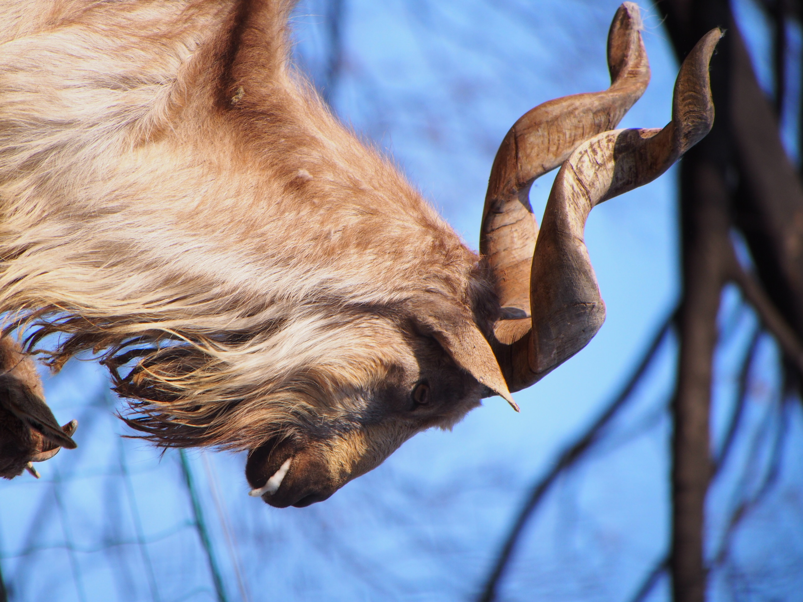
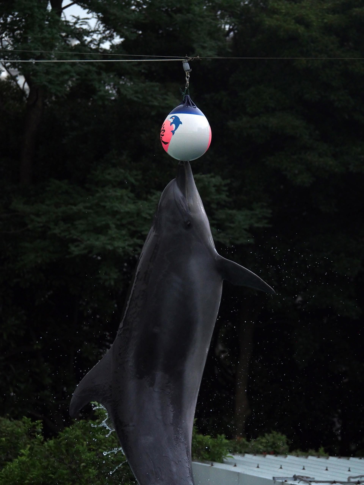
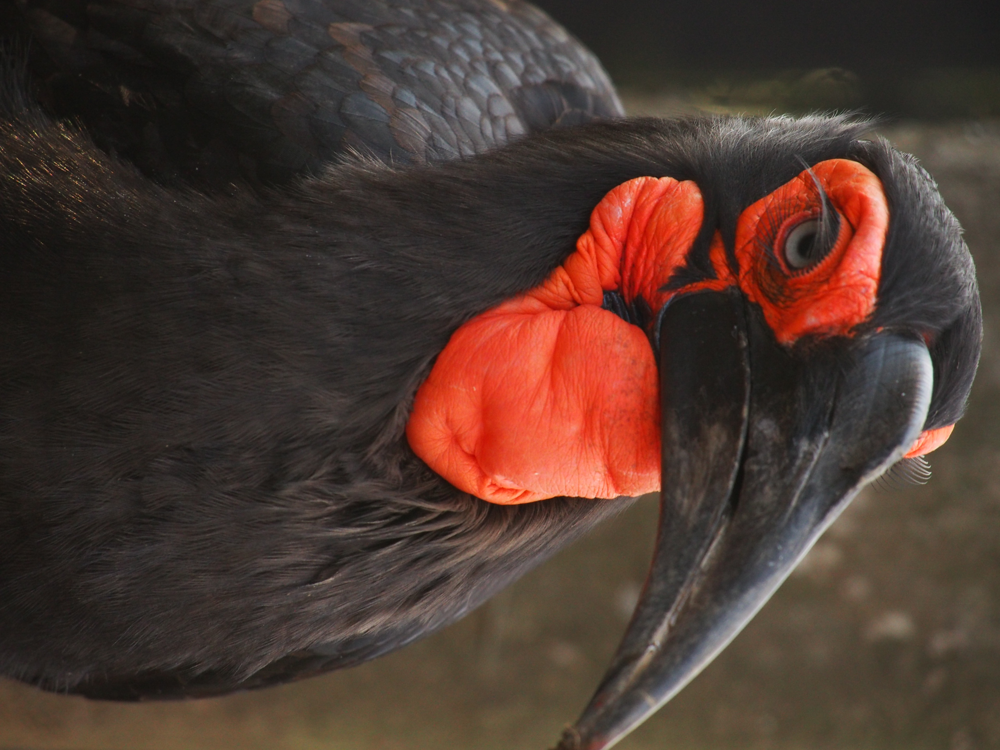
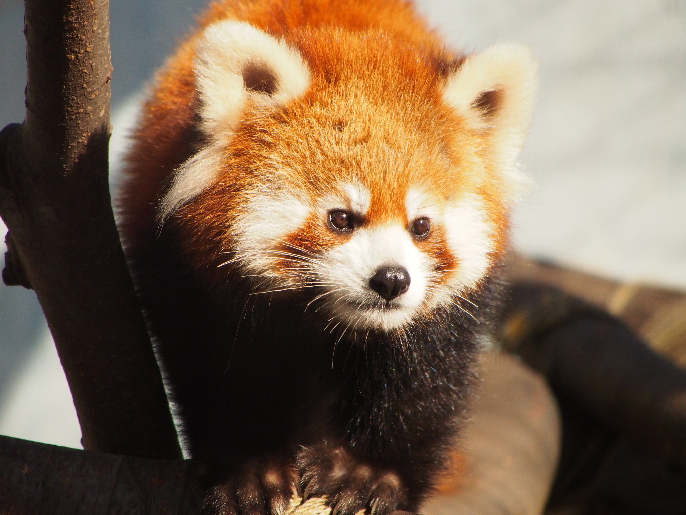
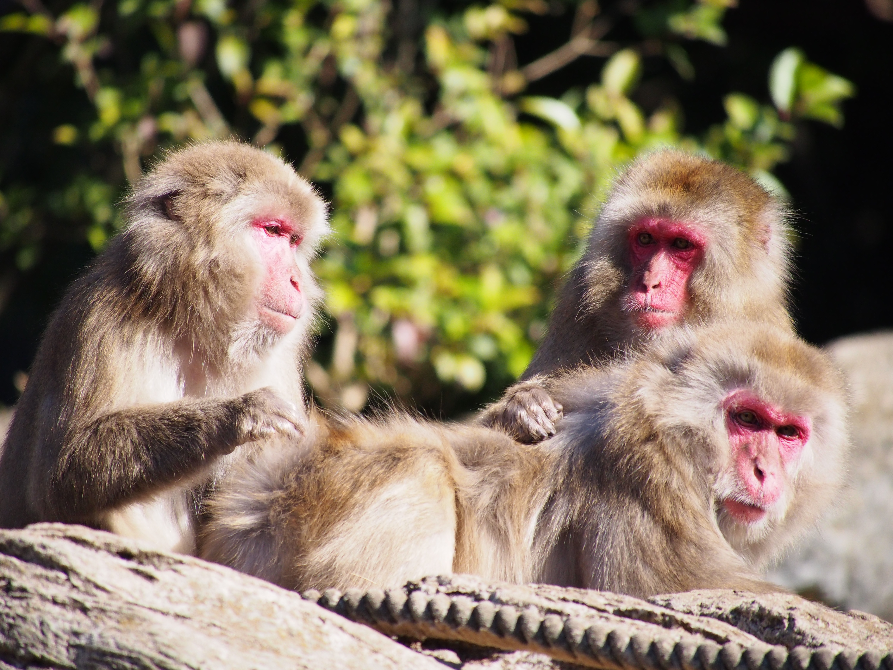
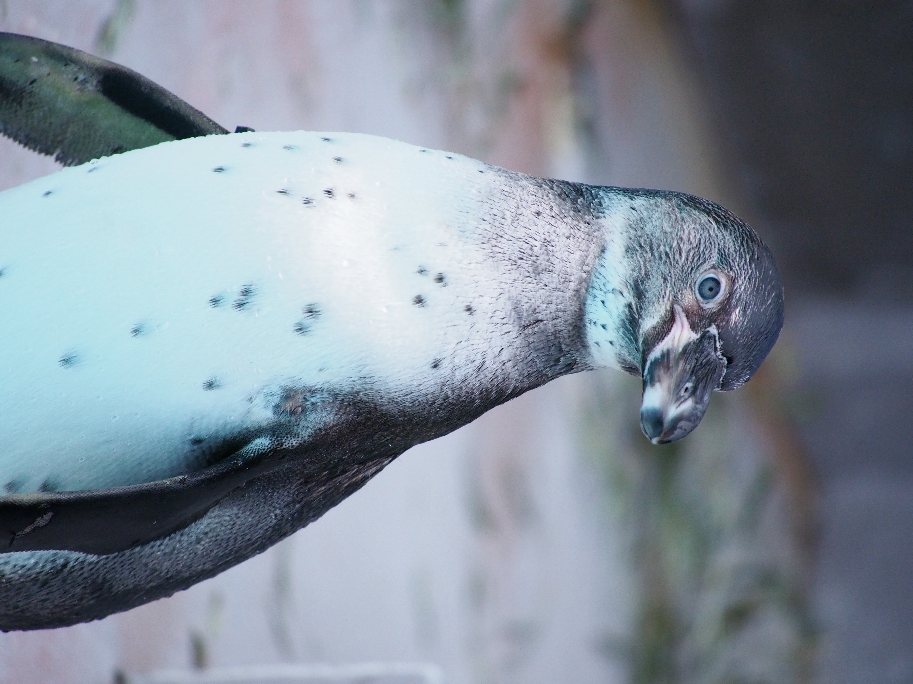
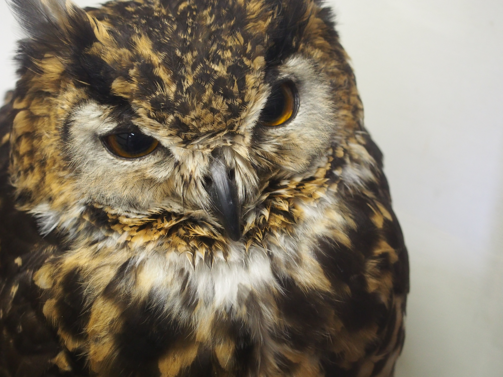

=====

オリーブ@小豆島／2022年8月撮影 [設定] f/4 1/2000秒 ISO-640 45mm

ひまわり@小豆島／2022年8月撮影 [設定] f/4 1/2500秒 ISO-640 33mm

不明@熱海／2022年5月撮影 [設定] f/5.6 1/250秒 ISO-400 45mm

バラ@熱海／2022年5月撮影 [設定] f/5.6 1/250秒 ISO-400 45mm

ネコ@川治／2022年4月撮影 [設定] f/4 1/400秒 ISO-1600 27mm

ニホンザル@上野／2022年4月撮影 [設定] f/5.6 1/1000秒 ISO-1600 300mm

ミーアキャット@横浜／2020年12月撮影 [設定] f/5.6 1/3200秒 ISO-3200 300mm
チリーフラミンゴ@夢見ヶ崎／2019年3月撮影 [設定] f/5.6 1/320秒 ISO-500 300mm
マーコール@夢見ヶ崎／2019年3月撮影 [設定] f/5.6 1/1000秒 ISO-500 300mm
イルカ@品川／2017年9月撮影 [設定] f/4.5 1/1000秒 ISO-1250 100mm
ミナミジサイチョウ@横浜／2017年9月撮影 [設定] f/5.6 1/400秒 ISO-1000 197mm
レッサーパンダ@夢見ヶ崎／2015年12月撮影 [設定] f/5.6 1/2000秒 ISO-1600 300mm
ニホンザル@横浜／2015年12月撮影 [設定] f/5.6 1/1600秒 ISO-1250 300mm
ペンギン@野毛山／2015年11月撮影 [設定] f/5.6 1/1000秒 ISO-2500 300mm
フクロウ@松江／2015年2月撮影 [設定] f/5.6 1/8秒 ISO-1600 41mm